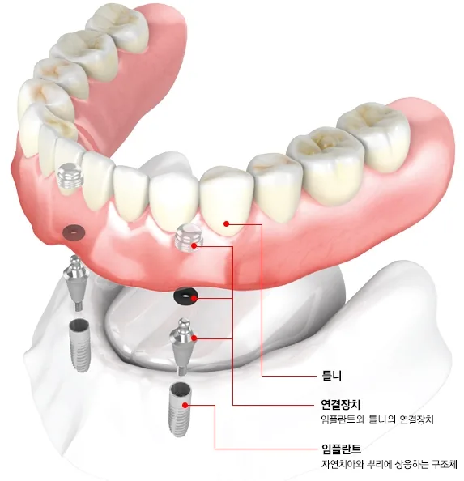

틀니
틀니는 빠진 치아를 대신하는 보철물로, 환자가 직접 끼우고 빼서 관리합니다. 틀니에는 임플란트 틀니, 완전틀니, 부분틀니가 있으며, 처음 끼면 이물감과 상처가 생길 수 있어 적응 기간이
한눈에 보기
- 종류
- 임플란트 틀니 · 완전틀니 · 부분틀니
- 잇몸에 닿는 부분
- 레진 등 플라스틱
(경우에 따라 금속) - 치아 부분
- 레진 · 도자기 · 금(주로 레진)
- 처음 낄 때
- 이물감·상처가 생길 수 있어 적응 기간 필요
- 비용
- 진찰 후 항목별로 미리 안내합니다


임플란트 틀니
남은 치아가 거의 없거나 임플란트를 많이 심기에는 비용이 부담될 때, 적은 수의 임플란트를 심어 전체 틀니를 고정합니다. 전체 틀니는 잇몸이 눌리며 차츰 줄어들 수 있는데, 임플란트 틀니는 임플란트가 씹는 힘을

완전틀니
치아를 모두 잃었을 때 하는 틀니입니다. 잇몸뼈가 많이 남아 있으면 틀니가 잇몸에 잘 붙지만, 그렇지 않으면 헐거워 잘 빠질 수 있어 치아와 잇몸 관리에 더 신경
부분틀니
자연치아가
자주 묻는 질문
틀니를 처음 끼면 불편한가요?
처음 끼면 이물감이 들고 상처가 생기기도 해 적응 기간이 필요합니다.
완전틀니가 자주 빠지면 어떻게 하나요?
잇몸뼈가 많이 남지 않으면 틀니가 헐거워 잘 빠질 수 있습니다. 임플란트 몇 개를 심고 틀니를 고정하는 임플란트 틀니를 상담해 볼 수 있습니다.
진료시간 · 오시는 길
031-683-7575경기도 평택시 안중읍 안중로 132
- 성심주차장을 이용하시면 주차권에 병원 도장을 찍어 드려 무료로 주차할 수 있습니다
(이면도로 주차는 유료). - 본원 뒤 주차장은 자리가 좁습니다. 이용하실 때는 주차권을 받아 가셔야 나가실 수 있습니다.
진료시간
- 월
- 전체
- 오전 9시 ~ 오후 6시교정과 오전 10시 ~ 오후 6시
- 화
- 전체
- 오전 9시 ~ 오후 8시
- 수
- 3층
- 오전 9시 ~ 오후 6시
- 목
- 2층
- 오전 9시 ~ 오후 8시
- 금
- 전체
- 오전 9시 ~ 오후 8시2층 오전 9시 ~ 오후 6시교정과 오후 2시 ~ 8시
- 토
- 전체
- 오전 9시 ~ 오후 2시점심시간 없음
- 점심
- 평일
- 오후 1시 ~ 2시
- 휴진
- 일요일 · 공휴일 휴진